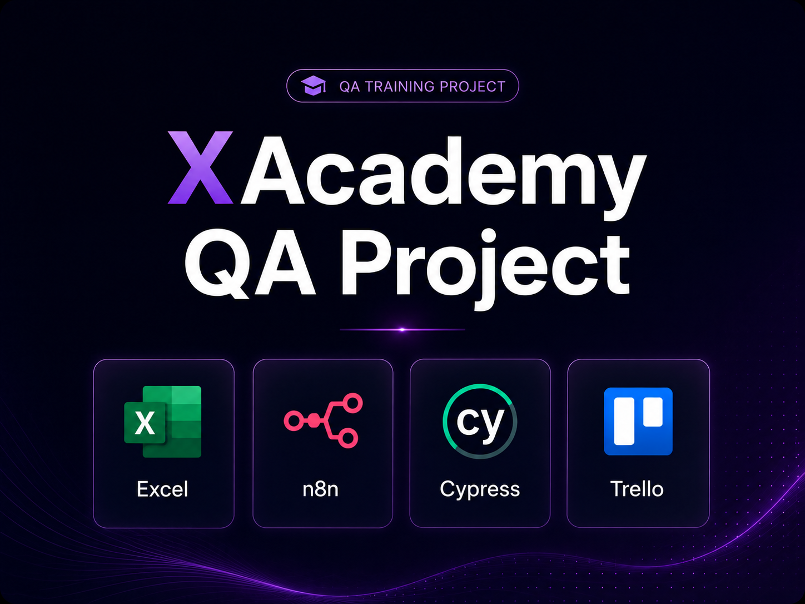
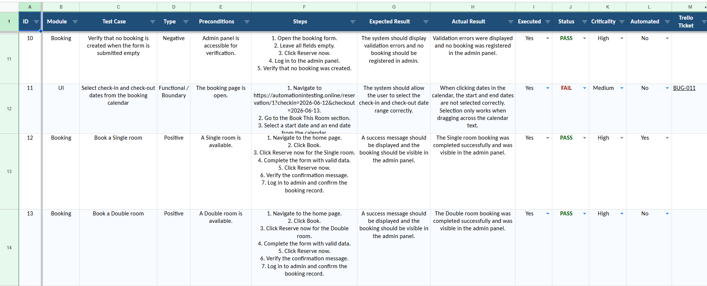
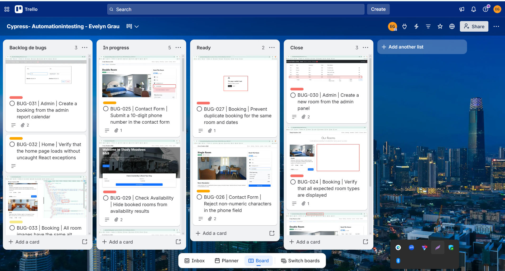
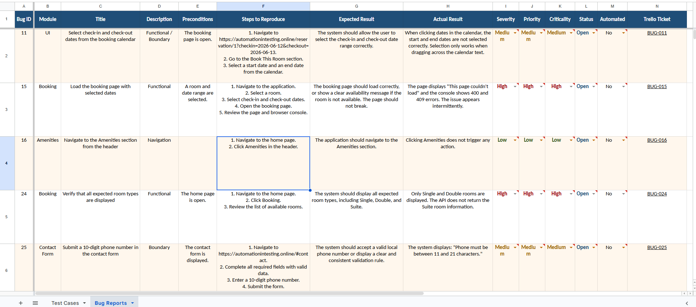

+2Featured Project
XAcademy QA Project
Manual and Automation QA project focused on test case design, functional testing, bug reporting, evidence organization and workflow documentation.
- Designed test cases and execution evidence
- Automated test cases with Cypress
- Organized QA documentation in Google Sheets
- Used Trello to track issues and workflow status